神经网络模型（有监督） (Neural network models (supervised))¶
Warning
这部分的内容并不适用于大规模的应用问题。特别地，scikit-learn 并不提供GPU支持。如需更快的基于GPU的执行，或者需要能为搭建深度学习架构提供更多灵活性的框架，可参见 Related Projects 中的内容。
多层感知器 (Multi-layer Perceptron)¶
多层感知器 (MLP) 是一种监督学习算法，它通过训练一个数据集来学习方程 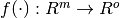 ，其中，  是输入量 (input)的维度，
是输入量 (input)的维度，  是输出量 (output)的维度。已知一个特征集 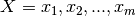 和一个目标
是输出量 (output)的维度。已知一个特征集 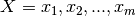 和一个目标  ，它能为分类或回归问题学习一个非线性方程的近似方程。不同于逻辑回归，多层感知器在输入层和输出层之间存在一个或多个非线性层（叫做隐藏层）。图1所表示的MLP有一个隐藏层，且其输出是一个标量。
，它能为分类或回归问题学习一个非线性方程的近似方程。不同于逻辑回归，多层感知器在输入层和输出层之间存在一个或多个非线性层（叫做隐藏层）。图1所表示的MLP有一个隐藏层，且其输出是一个标量。

图1: 一个隐藏层的MLP.
最左边的层，一般叫做输入层，包含一个神经元集合 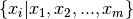 ，来表示输入中的特征。每一个神经元通过一个加权线性和 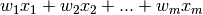 来变换上一个层的值，随后用一个非线性激活函数  来计算，例如双曲tan函数。输出层从最后一个隐藏层中得到数值，然后将其转换为输出值。
来计算，例如双曲tan函数。输出层从最后一个隐藏层中得到数值，然后将其转换为输出值。
本模块包含两个公共属性 coefs_ 和 intercepts_。 coefs_ 是一个权重矩阵的列表，权重矩阵的索引  表示 层和 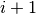 层之间的权重。
表示 层和 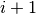 层之间的权重。 intercepts_ 是一个偏度向量的列表，索引号为 的向量表示加到 层的偏度值。
多层感知器 (MLP)的优势在于：
- 具有学习非线性模型的能力。
- 应用
partial_fit具有实时（或在线）学习模型的能力。
多层感知器 (MLP)的劣势包括：
- 包含隐藏层的MLP的损失函数是一个非凸函数，存在多于一个的局部最小值。因此，不同的初始随机权重值会到时不同的验证精度。
- MLP需要调试若干个超参数，比如隐藏神经元的个数，层数，迭代数。
- MLP对特征缩放敏感
部分劣势的详细说明可以参见 Tips on Practical Use 部分。
分类 (Classification)¶
MLPClassifier 类通过使用 Backpropagation 来执行一个MLP算法来训练。
MLP对两个向量进行训练：向量X的大小为 (n_samples, n_features)，其包含以浮点型的特征的向量来表示的训练样本；另一个向量y的大小为 (n_samples,)，其包含训练样本对应的目标值（类别标签）。
>>> from sklearn.neural_network import MLPClassifier
>>> X = [[0., 0.], [1., 1.]]
>>> y = [0, 1]
>>> clf = MLPClassifier(solver='lbfgs', alpha=1e-5,
... hidden_layer_sizes=(5, 2), random_state=1)
...
>>> clf.fit(X, y)
MLPClassifier(activation='relu', alpha=1e-05, batch_size='auto',
beta_1=0.9, beta_2=0.999, early_stopping=False,
epsilon=1e-08, hidden_layer_sizes=(5, 2), learning_rate='constant',
learning_rate_init=0.001, max_iter=200, momentum=0.9,
nesterovs_momentum=True, power_t=0.5, random_state=1, shuffle=True,
solver='lbfgs', tol=0.0001, validation_fraction=0.1, verbose=False,
warm_start=False)
在拟合（训练）后，模型能对新样本的标签进行预测：
>>> clf.predict([[2., 2.], [-1., -2.]])
array([1, 0])
MLP对训练数据拟合一个非线性模型。 clf.coefs_ 包含权重矩阵，从而构成了整个模型的参数:
>>> [coef.shape for coef in clf.coefs_]
[(2, 5), (5, 2), (2, 1)]
目前， MLPClassifier 仅支持互熵(Cross-Entropy)损失函数，其可以通过运行
predict_proba 方法来进行概率估计。
MLP应用了反向传播算法。更准确地说，它用某种形式的梯度下降来进行训练，梯度是用反向传播算法进行计算的。对于分类问题，它对互熵损伤函数进行最小化，最后对每个样本  给出一个概率估计向量
给出一个概率估计向量  :
:
>>> clf.predict_proba([[2., 2.], [1., 2.]])
array([[ 1.967...e-04, 9.998...-01],
[ 1.967...e-04, 9.998...-01]])
MLPClassifier 支持多类别的分类，可以通过应用 Softmax 作为输出函数。
具体来说，模型支持 multi-label classification ，即一个样本可以属于多于一个的类。对于每一个类，原始输出用逻辑函数处理。大于等于 0.5 的值取为 1，否则取为 0。对于一个样本的预测出来的输出，值为 1 处的索引值即为这个样本被指定的类：
>>> X = [[0., 0.], [1., 1.]]
>>> y = [[0, 1], [1, 1]]
>>> clf = MLPClassifier(solver='lbfgs', alpha=1e-5,
... hidden_layer_sizes=(15,), random_state=1)
...
>>> clf.fit(X, y)
MLPClassifier(activation='relu', alpha=1e-05, batch_size='auto',
beta_1=0.9, beta_2=0.999, early_stopping=False,
epsilon=1e-08, hidden_layer_sizes=(15,), learning_rate='constant',
learning_rate_init=0.001, max_iter=200, momentum=0.9,
nesterovs_momentum=True, power_t=0.5, random_state=1, shuffle=True,
solver='lbfgs', tol=0.0001, validation_fraction=0.1, verbose=False,
warm_start=False)
>>> clf.predict([[1., 2.]])
array([[1, 1]])
>>> clf.predict([[0., 0.]])
array([[0, 1]])
更多信息可以参见下面的例子和 MLPClassifier.fit 。
Examples:
- sphx_glr_auto_examples_neural_networks_plot_mlp_training_curves.py
- sphx_glr_auto_examples_neural_networks_plot_mnist_filters.py
回归 (Regression)¶
MLPRegressor 类应用一个多层感知器 (MLP)来通过向后传播来训练，其输出层中没有激活函数，这也可以看作使用恒等函数作为激活函数。所以，它把平方误差作为损失函数，最后输出量是连续值的集合。
MLPRegressor 同样也支持多输出的回归，即一个样本有多于一个的目标。
正则化 (Regularization)¶
MLPRegressor 和 MLPClassifier 都使用 alpha 来进行正则化（L2正则化），其通过惩罚较大的权重来防止过拟合。下图展示了决策函数随着alpha值变化的情况。

更多信息可以参见下面的例子。
Examples:
- sphx_glr_auto_examples_neural_networks_plot_mlp_alpha.py
算法 (Algorithms)¶
MLP训练使用随机梯度下降 Stochastic Gradient Descent ， Adam, 或者 L-BFGS 。随机梯度下降 (SGD) 对需要改进的参数的损失函数求其梯度，例如，
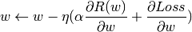
其中，  是控制参数空间搜索步长的学习速度。 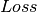 是这个网络的损失函数。
是控制参数空间搜索步长的学习速度。 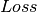 是这个网络的损失函数。
更多细节可以在 SGD 文档中找到。
Adam和SGD类似，它也是一个随机最优化器，但是它能根据低阶矩的自适应估计来自动地调整更新参数的量。
SGD和Adam的训练支持在线 (online)和小批量 (mini-batch)的学习.
L-BFGS 是Hessian矩阵的一个求解器，用来求一个函数的二阶偏微分导数。它通过求Hessian矩阵的逆矩阵的近似解来进行参数更新。实现过程使用了L-BFGS的Scipy版本 L-BFGS 。
如果选择的求解器是 L-BFGS，那么训练不支持在线或小批量学习。
复杂性 (Complexity)¶
假定有  个训练样本， 个特征，
个训练样本， 个特征，  层隐藏层，每层包含
层隐藏层，每层包含  个神经元， 个输出神经元。向后传播的时间复杂性为 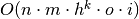 ，其中， 是迭代次数。由于向后传播有很高的时间复杂性，我们建议一开始时使用数量较少的神经元和较少的隐藏层数进行训练。
个神经元， 个输出神经元。向后传播的时间复杂性为 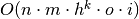 ，其中， 是迭代次数。由于向后传播有很高的时间复杂性，我们建议一开始时使用数量较少的神经元和较少的隐藏层数进行训练。
数学公式¶
现有一组训练样本 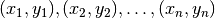 其中  和 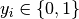，一个隐藏层和一个隐藏神经元的MLP来学习函数 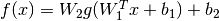 其中 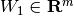 和 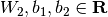 为模型参数。 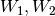 分别表示输入层和隐藏层的权重。 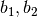 分别表示加到隐藏层和输出层的偏移值。 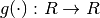 是一个激活函数，默认设置为双曲tan函数。其公式为：
和 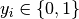，一个隐藏层和一个隐藏神经元的MLP来学习函数 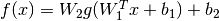 其中 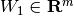 和 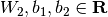 为模型参数。 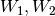 分别表示输入层和隐藏层的权重。 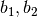 分别表示加到隐藏层和输出层的偏移值。 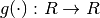 是一个激活函数，默认设置为双曲tan函数。其公式为：
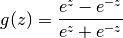
对于二元分类，  通过逻辑函数 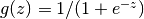 来获得1和0之间的输出值。阈值设置为0.5，即将大于等于0.5的样本输出指定为阳性类别，其他为阴性类别。
通过逻辑函数 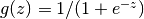 来获得1和0之间的输出值。阈值设置为0.5，即将大于等于0.5的样本输出指定为阳性类别，其他为阴性类别。
如果是多于两个的类别， 本身是一个大小为(n_classes,)的向量。这时它并不传递给逻辑函数，而是传递给softmax函数，该函数表示为：
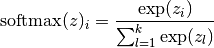
其中，  表示softmax的输入的第 个元素，其对应类别 ，
表示softmax的输入的第 个元素，其对应类别 ，  是类别的数量。其结果是一个包含样本 属于每个类别的概率的向量。输出的是最高概率所对应的类别。
是类别的数量。其结果是一个包含样本 属于每个类别的概率的向量。输出的是最高概率所对应的类别。
在回归中，输出量仍然是 。因此，输出的激活函数仅仅是一个恒等函数。
MLP基于问题的类型使用不同的损失函数。分类的损失函数是互熵，在二元问题中表示为：
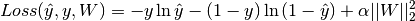
其中， 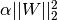 是一个L2正则项（又称作惩罚项），用来惩罚模型的复杂性；  是一个非负的超参数，用来控制惩罚的程度。
是一个非负的超参数，用来控制惩罚的程度。
对于回归，MLP使用平方误差损失函数，可写作：
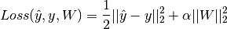
MLP从初始随机权重开始通过重复地对权重进行更新，从而对损失函数进行最小化。在计算损失后，一个向后的路径将损失从后面一层传递到前面的层，为每个权重参数提供一个能减小损失的更新后的权重值。
在梯度下降中，我们计算基于  的损失对于权重的梯度 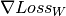 。更严密的公式可表达为：
的损失对于权重的梯度 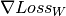 。更严密的公式可表达为：

其中， 是迭代步，  是一个大于0的学习速率。
是一个大于0的学习速率。
但达到预设的最大迭代数时，或者对损失的改进小于一个较小的数时，我们停止运算。
实际使用中的建议¶
多层感知器对于特征缩放敏感，所以我们强烈建议缩放您的数据。例如，将输入向量的每个特征缩放至[0, 1] 或者 [-1, +1]，或者，将其标准化至均值为0且方差为1。需要注意的是，为了得到有意义的结果，我们必须对测试集应用 相同 的缩放。您可以用
StandardScaler进行标准化。>>> from sklearn.preprocessing import StandardScaler >>> scaler = StandardScaler() >>> # Don't cheat - fit only on training data >>> scaler.fit(X_train) >>> X_train = scaler.transform(X_train) >>> # apply same transformation to test data >>> X_test = scaler.transform(X_test)另一个推荐的方式是使用
Pipeline中的StandardScaler。找到一个合理的正则化参数
的方式是使用
GridSearchCV，通常其区间是10.0 ** -np.arange(1, 7)。就经验来说，我们发现 L-BFGS 对于小的数据集收敛速度较快且结果更好。但对于相对较大的数据集， Adam 非常得可靠。通常它能很快收敛并且给出较好的结果。然而， SGD 用动量或nesterov动量时，如果学习速率调试正确，其性能比上述两种方法都要好。
使用warm_start进行控制¶
如果您想要在SGD中对停止准则或学习速率有更多的控制，或者您想要更多地监控，设置 warm_start=True 和 max_iter=1 进行循环可以对此有所帮助：
>>> X = [[0., 0.], [1., 1.]]
>>> y = [0, 1]
>>> clf = MLPClassifier(hidden_layer_sizes=(15,), random_state=1, max_iter=1, warm_start=True)
>>> for i in range(10):
... clf.fit(X, y)
... # additional monitoring / inspection
MLPClassifier(...
参考文献：
- “Learning representations by back-propagating errors.” Rumelhart, David E., Geoffrey E. Hinton, and Ronald J. Williams.
- “Stochastic Gradient Descent” L. Bottou - Website, 2010.
- “Backpropagation” Andrew Ng, Jiquan Ngiam, Chuan Yu Foo, Yifan Mai, Caroline Suen - Website, 2011.
- “Efficient BackProp” Y. LeCun, L. Bottou, G. Orr, K. Müller - In Neural Networks: Tricks of the Trade 1998.
- “Adam: A method for stochastic optimization.” Kingma, Diederik, and Jimmy Ba. arXiv preprint arXiv:1412.6980 (2014).